7.1. DUALSHOCK®を使った操縦#
HSRはDUALSHOCK®3またはDUALSHOCK®4を用いた操作が可能です。 ここでは、その操作方法について説明します。
7.1.1. DUALSHOCK®3の接続#
DUALSHOCK®3では、有線接続と無線接続が可能です。
7.1.1.1. DUALSHOCK®3への切り替え#
以下の手順でDUALSHOCK®3に変更できます。
シミュレータを起動している場合は、「Ctrl」+「C」を押し、シミュレータを停止してください。
以下を実行し、環境変数を設定してください。
$ export USE_DUALSHOCK4=false
必要に応じた環境のシミュレータを起動してください。
7.1.1.2. 有線接続#
有線での接続方法と切断方法を説明します。
7.1.1.2.1. 接続方法#
開発PCのUSBポートへDUALSHOCK®3を接続します。
DUALSHOCK®3をUSBポートに接続後、下図の「PS」ボタンを押してください。

7.1.1.2.2. 切断方法#
切断するには、DUALSHOCK®3のUSBケーブルをUSBポートから抜いてください。 DUALSHOCK®3の上部の赤いランプが消灯すれば切断が確認できます。
7.1.1.3. 無線接続#
無線接続に必要な事前準備および無線での接続方法と切断方法を説明します。
7.1.1.3.1. 事前準備#
初回のみ行う設定
以下を実行し、必要なパッケージをインストールしてください。
$ sudo apt update $ sudo apt install -y bluetooth bluez bluez-tools
開発PCの
/etc/bluetooth/input.confのClassicBondedOnlyをfalseにしてください。ClassicBondedOnly=false
起動のたびに行う確認
開発PCのBluetoothが無効化されていると無線接続できないため、 再起動するたびにBluetoothの状態を確認する必要があります。 ここでは確認方法と有効化手順を説明します。
確認方法
以下を実行し、Bluetoothの状態を確認してください。
$ rfkill list 0: hci0: Bluetooth Soft blocked: no Hard blocked: no
Soft blockedとHard blockedが両方とも「no」の場合、Bluetoothは有効です。 いずれか一方でも「yes」の場合は Bluetooth が無効化されているため、以下の有効化手順を実施してください。有効化手順
以下を実行し、Bluetoothの有効化と再起動を行ってください。
$ sudo rfkill unblock bluetooth $ sudo systemctl restart bluetooth
以下を実行し、Bluetoothの状態を確認してください。
$ rfkill list
いずれか一方が「yes」で、Bluetoothがうまく起動しない場合は、以下を実行してください。
$ sudo hciconfig hci0 up piscan $ sudo hciconfig hci0
UPという表示が確認できれば、Bluetoothが起動しています。
7.1.1.3.2. 接続方法#
以下を実行し、
bluetoothctlを起動してください。$ bluetoothctl起動すると以下のようなコンソールが表示されます。 このコンソールにコマンドを入力して、Bluetoothを操作します。
[bluetooth]#
抜けるには「Ctrl」+「D」を押してください。
以下を実行し、Bluetoothを起動してください。
[bluetooth]# agent on [bluetooth]# default-agent [bluetooth]# power on
開発PCのUSBポートへDUALSHOCK®3を接続してください。
bluetoothctlにYes/Noの確認メッセージが表示されたら、Yesと入力してください。DUALSHOCK®3のUSBケーブルをUSBポートから抜いて「PS」ボタンを押すと、 DUALSHOCK®3の赤いランプが1つ点灯することを確認してください。 赤いランプが点灯すれば接続に成功しています。
7.1.1.3.3. 切断方法#
接続を切断する際は、以下のいずれかを実施してください。
DUALSHOCK®3の「PS」ボタンを10秒程度長押ししてください。
bluetoothctlで以下を実行してください。[bluetooth]# disconnect
または、
bluetoothctlに入っていない状態で以下を実行してください。$ bluetoothctl disconnect
DUALSHOCK®3の上部の赤いランプが消灯すれば切断が確認できます。
7.1.2. DUALSHOCK®4の接続#
DUALSHOCK®4では、有線接続と無線接続が可能です。
7.1.2.1. DUALSHOCK®4への切り替え#
以下の手順でDUALSHOCK®4に変更できます。
シミュレータを起動している場合は「Ctrl」+「C」を押し、シミュレータを停止してください。
以下を実行し、環境変数を設定してください。
$ export USE_DUALSHOCK4=true
必要に応じた環境のシミュレータを起動してください。
7.1.2.2. 有線接続#
有線での接続方法と切断方法を説明します。
7.1.2.2.1. 接続方法#
開発PCのUSBポートへDUALSHOCK®4を接続します。
DUALSHOCK®4をUSBポートに接続後、下図の「PS」ボタンを押してください。
{kind=link}
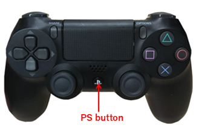
7.1.2.2.2. 切断方法#
切断するには、DUALSHOCK®4のUSBケーブルをUSBポートから抜いてください。 DUALSHOCK®4の上部のライトバーが消灯すれば切断が確認できます。
7.1.2.3. 無線接続#
無線接続に必要な事前準備および無線での接続方法と切断方法を説明します。
7.1.2.3.1. 事前準備#
「DUALSHOCK®3の接続」の 事前準備 を参照し、Bluetoothの準備を行ってください。
7.1.2.3.2. 接続方法#
DUALSHOCK®4はDUALSHOCK®3と異なり、初回設定を行うことでペアリング情報を保持でき、容易に無線接続できるようになります。
以下の手順ではまず初回の接続設定を実施します。
初回の接続設定（ペアリング）
以下を実行し、
bluetoothctlを起動してください。$ bluetoothctl起動すると以下のようなコンソールが表示されます。 このコンソールにコマンドを入力して、Bluetoothを操作します。
[bluetooth]#
抜けるには「Ctrl」+「D」を押してください。
以下を実行し、Bluetoothを起動してください。
[bluetooth]# agent on [bluetooth]# default-agent [bluetooth]# power on
DUALSHOCK®4の「SHARE」ボタンと「PS」ボタンを同時に長押しすると、 DUALSHOCK®4の上部のライトバーが白く2回ずつ点滅することを確認してください。
bluetoothctlで以下を実行し、DUALSHOCK®4のデバイス名(Wireless Controller)を確認してください。[bluetooth]# scan on
DUALSHOCK®4のデバイス名が表示されたら、以下を実行してください。
[bluetooth]# scan off
以下を実行し、DUALSHOCK®4のアドレス番号を確認してください。 以下の場合、アドレス番号は
A4:AE:11:20:39:F1です。[bluetooth]# devices Device A4:AE:11:20:39:F1 Wireless Controller
以下を実行し、ペアリングを行ってください。 なお、
<Address>にはDUALSHOCK®4のアドレス番号を入力してください。[bluetooth]# pair <Address>
bluetoothctlにYes/Noの確認メッセージが表示されたら、Yesと入力してください。 DUALSHOCK®4の上部のライトバーが青く点灯すれば接続に成功しています。以下を実行し、次回起動時に接続できるようにしてください。 なお、
<Address>には上記で入力したアドレス番号を入力してください。[bluetooth]# trust <Address>
2回目以降の接続
以下を実行し、Bluetoothを起動してください。
$ bluetoothctl power on
DUALSHOCK®4の「PS」ボタンを押してください。 DUALSHOCK®4の上部のライトバーが青く点灯すれば接続に成功しています。
7.1.2.3.3. 切断方法#
「DUALSHOCK®3の接続」の 切断方法 を参照し、接続を切断してください。 なお、DUALSHOCK®4では、DUALSHOCK®4の上部のライトバーが消灯すれば切断が確認できます。
7.1.3. 操作方法#
7.1.3.1. 操作概要#
{kind=link}
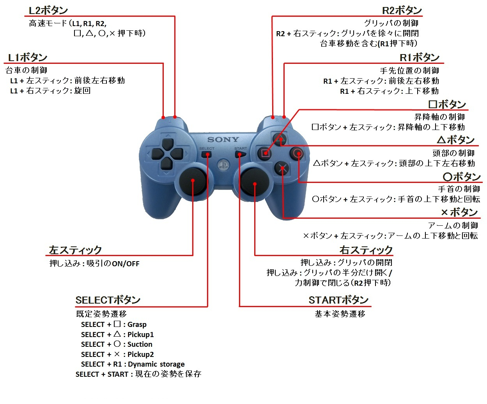
DUALSHOCK@3#
{kind=link}
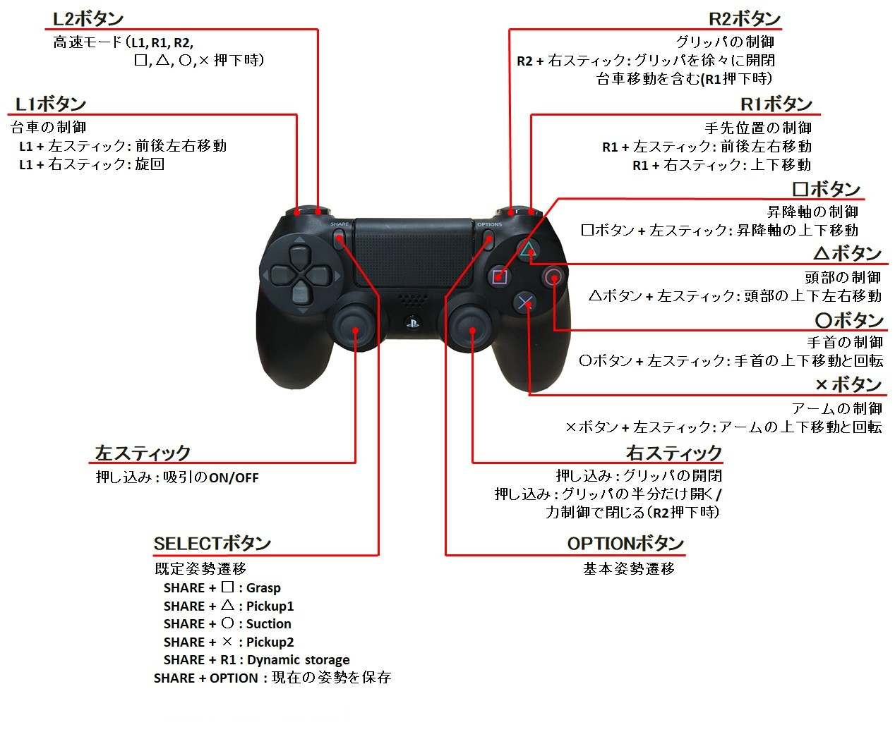
DUALSHOCK@4#
操作は基本的に、 「Enableボタン」 を押しながら、 「Controlボタン」 を押すことで制御します。
以降の説明図では、左側が「Enableボタン」、右側が「Controlボタン」になります。
7.1.3.2. 常時可能な制御#
基本姿勢遷移、グリッパ開閉、「Enableボタン」を押す必要はなく、常に制御が可能です。

{kind=link}
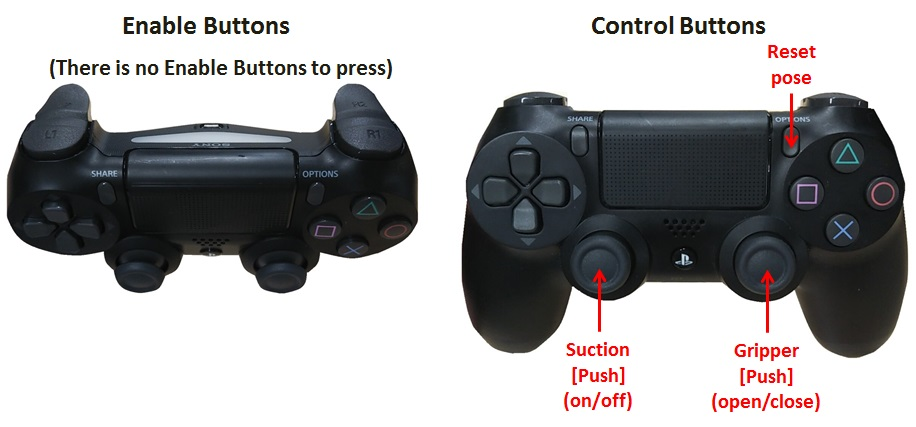
- Reset pose:
ロボットをグリッパが前を向いた基本姿勢に遷移させます。 ロボットの姿勢が制御しづらくなった場合、基本姿勢に一度遷移させることをお勧めします。

- Gripper:
グリッパの開閉を行います。
7.1.3.3. 「SELECT/SHARE」を押しながら制御#
7.1.3.3.1. 既定姿勢遷移#
あらかじめ既定された姿勢へ遷移します。
{kind=link}

- Pickup1:
ものを横から拾いあげるのに適した姿勢に遷移します。 昇降軸、手首Roll軸を用いて把持に必要な姿勢に制御できます。 なお、この姿勢の状態で昇降軸を一番下に下げても、グリッパを閉じた際に地面とぶつからない姿勢となっています。
{kind=link}
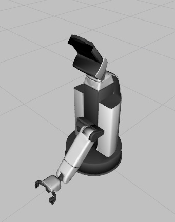
- Pickup2:
ものを上から拾いあげるのに適した姿勢に遷移します。 昇降軸、手首Roll軸を用いて把持に必要な姿勢に制御できます。 なお、この姿勢の状態で昇降軸を一番下に下げても、グリッパを閉じた際に地面とぶつからない姿勢となっています。

- Suction:
カード等を吸引を用いて拾うのに適した姿勢に遷移します。 グリッパは開いた状態でこの姿勢に遷移させてください。
{kind=link}
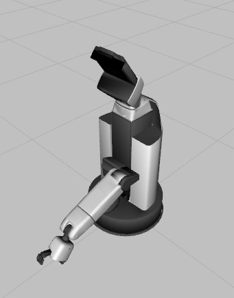
- Grasp:
正面にあるものを掴むのに適した姿勢に遷移します。 昇降軸、手首Roll軸を用いて把持に必要な姿勢に制御できます。
{kind=link}
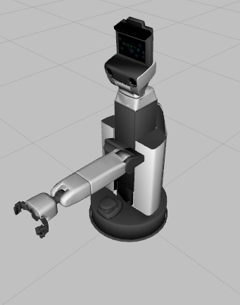
7.1.3.3.2. 動的姿勢保存および遷移#
動的に姿勢を保持し、保持した姿勢に遷移します。
{kind=link}
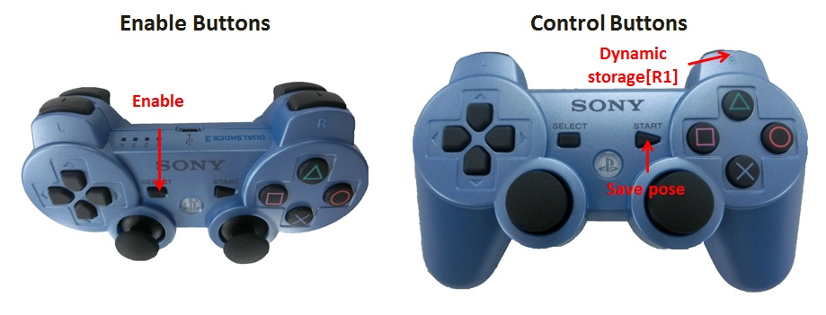
{kind=link}
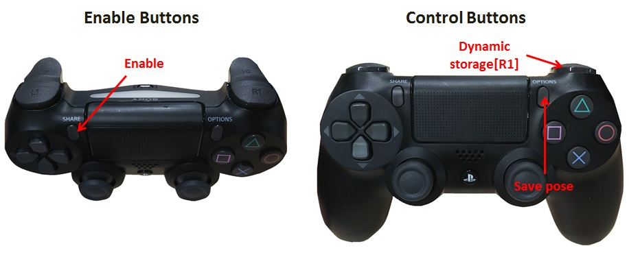
- Save Pose:
ロボットの現在の姿勢を保存します。
- Dynamic storage:
保存した姿勢へ遷移します。 姿勢が保存されていない場合は基本姿勢遷移へ遷移します。
7.1.3.4. 「L1」を押しながら制御#
7.1.3.4.1. 台車の制御#
台車の制御を行います。 「L1」のみを押している間は通常速度で移動します。 「L1」を押しながら「L2」を押すと、「L2」を押している間は移動速度が速くなります。

{kind=link}
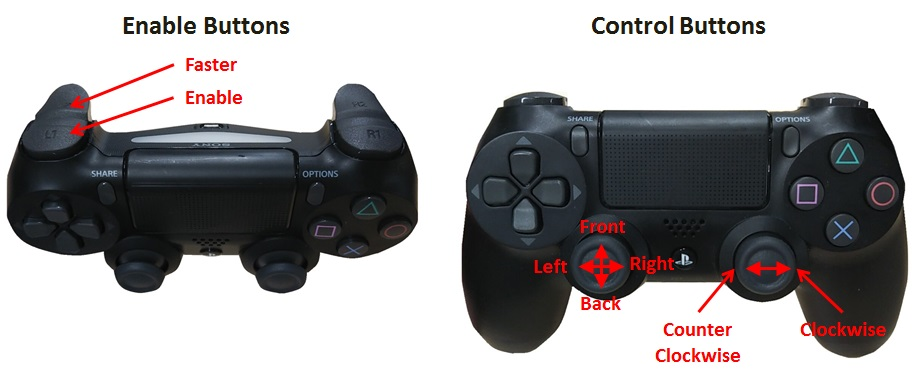
- Front:
前方向に移動します。
- Back:
後ろ方向に移動します。
- Right:
右方向に移動します。
- Left:
左方向に移動します。
- Clockwise:
時計回りに旋回します。
- Counter Clockwise:
反時計回りに旋回します。
7.1.3.5. 「△」を押しながら制御#
7.1.3.5.1. 頭部の制御#
頭部の制御を行います。 「△」のみを押している間は通常速度で移動します。 「△」を押しながら「L2」を押すと、「L2」を押している間は移動速度が速くなります。


- Up:
上を向きます。
- Down:
下を向きます。
- Right:
右を向きます。
- Left:
左を向きます。
7.1.3.6. 「□」を押しながら制御#
7.1.3.6.1. 昇降軸の制御#
昇降軸の制御を行います。 「□」のみを押している間は通常速度で移動します。 「□」を押しながら「L2」を押すと、「L2」を押している間は移動速度が速くなります。
{kind=link}
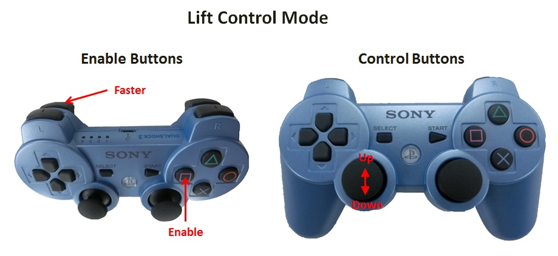
{kind=link}
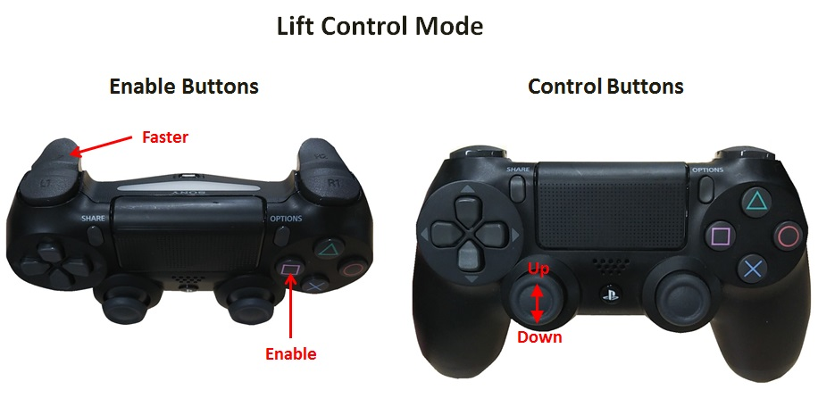
- Up:
昇降軸を上昇させます。
- Down:
昇降軸を下降させます。
7.1.3.7. 「○」を押しながら制御#
7.1.3.7.1. 手首の制御#
手首の制御を行います。 「○」のみを押している間は通常速度で移動します。 「○」を押しながら「L2」を押すと、「L2」を押している間は移動速度が速くなります。


- Up:
手首を上方向に回転させます。
- Down:
手首を下方向に回転させます。
- Clockwise:
手首を時計回りに旋回させます。
- Counter Clockwise:
手首を反時計回りに旋回させます。
7.1.3.8. 「×」を押しながら制御#
7.1.3.8.1. アームの制御#
アームの制御を行います。 「×」のみを押している間は通常速度で移動します。 「×」を押しながら「L2」を押すと、「L2」を押している間は移動速度が速くなります。


- Up:
アームを上方向に回転させます。
- Down:
アームを下方向に回転させます。
- Clockwise:
アームを時計方向に回転させます。
- Counter clockwise:
アームを反時計方向に回転させます。
7.1.3.9. 「R1」を押しながら制御#
7.1.3.9.1. 手先位置の制御#
手先位置の制御を行います。 手先の可動範囲を越える場合は、動かずにその場で停止したままとなります。
「R1」のみを押している間は台車はその場に留まったまま、手先位置の制御を行います。 「R1」を押しながら「R2」を押すと、「R2」を押している間は台車を含めた手先移動になります。 上記操作時に加えて「L2」を押すと、「L2」を押している間は移動速度が速くなります。
{kind=link}
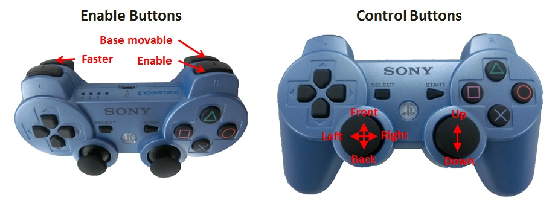

- Front:
前方向に移動します。
- Back:
後ろ方向に移動します。
- Right:
右方向に移動します。
- Left:
左方向に移動します。
- Up:
上方向に移動します。
- Down:
下方向に移動します。
7.1.3.10. 「R2」を押しながら制御#
7.1.3.10.1. グリッパの制御#
グリッパの制御を行います。 「R2」のみを押している間は通常速度で移動します。 「R2」を押しながら「L2」を押すと、「L2」を押している間は移動速度が速くなります。
高速モードは「Gripper open/close」のみ有効です。


- Gripper open:
グリッパを徐々に開きます。
- Gripper close:
グリッパを徐々に閉じます。
- Half Open:
グリッパの半分だけ開きます。
- Force grasp:
力制御でグリッパを閉じます。